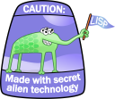

(sdl-examples:recursive-rects)
You should see a window like this:
")
Abstract
LISPBUILDER, or Common Lisp Application Builder is part of the Common Lisp Gardeners project. LISPBUILDER contains several packages for useful for developing cross-platform applications in Common Lisp. These packages are:
- LISPBUILDER-CAL3D: 3D character animation
- LISPBUILDER-CLAWK: AWK for Lisp
- LISPBUILDER-LEXER: A Lisp lexer
- LISPBUILDER-ODE: Physics
- LISPBUILDER-OPENRM: OpenGL Scene Graph
- LISPBUILDER-REGEX: Regular exression handling
- LISPBUILDER-SDL: Window and event management, rendering graphics, and sound support.
- LISPBUILDER-SDL-GFX: 2D graphical effects such as zooming, rotation, drawing circles, polygons and squares
- LISPBUILDER-SDL-IMAGE: Loading many 2D image formats such as PNG and JPG
- LISPBUILDER-SDL-MIXER: Multi-channel audio mixing
- LISPBUILDER-SDL-NET: Simple socket networking
- LISPBUILDER-SDL-TTF: True-type font rendering
- LISPBUILDER-WINDOWS: CFFI wrappers for Windows Windows
windows.h.- LISPBUILDER-YACC: YACC for Lisp
")

| Packages | Binary Library | |||
|---|---|---|---|---|
| Package Name | Version | Released | Lib Name | Version |
| lispbuilder-cal3d | - | In SVN | Cal3D | 0.10.0 |
| lispbuilder-clawk | Initial | 28 Feb 2006 | N/A | N/A |
| lispbuilder-lexer | Initial | 28 Feb 2006 | N/A | N/A |
| lispbuilder-ode | - | - | ODE | - |
| lispbuilder-openrm | 0.1.0 | Oct 20, 2006 | OpenRM | 1.6.0-2 |
| lispbuilder-regex | Initial | 28 Feb 2006 | N/A | N/A |
| lispbuilder-sdl | 0.8.0 | Oct 20, 2006 | SDL | 1.2.11 |
| lispbuilder-sdl-gfx | 0.5.0 | Oct 20, 2006 | SDL_gfx | 2.0.13 |
| lispbuilder-sdl-image | 0.2.0 | Oct 20, 2006 | SDL_image | 1.2.5 |
| lispbuilder-sdl-mixer | 0.1.0 | Oct 20, 2006 | SDL_mixer | 1.2.7 |
| lispbuilder-sdl-net | Placeholder | N/A | SDL_net | Placeholder |
| lispbuilder-sdl-ttf | 0.1.0 | Oct 20, 2006 | SDL_ttf | 2.0 |
| lispbuilder-windows | Initial | 10 Dec 2006 | N/A | N/A |
| lispbuilder-yacc | Initial | 28 Feb 2006 | N/A | N/A |
svn co https://lispbuilder.svn.sourceforge.net/svnroot/lispbuilder lispbuilder
start.lisp file found in the Lisp Starter Pack directoryThe LISPBUILDER-SDL-* libraries are ASDF-INSTALL compatible. For example the following will download and install the LISPBUILDER-SDL pacakge from the repository on cliki:
(asdf-install:install "lispbuilder-sdl-gfx_7.1.tgz")
The LISPBUILDER-SDL-* packages rely on external dynamic libraries. Because you are running Linux it is assumed that you know how to install these.
NOTE: The latest version of CFFI from SVN or the latest nightly tarball needs to be installed. LISPBUILDER-SDL-* requires a later version of CFFI than is usually packaged for use with ASDF-INSTALL.
NOTE: CFFI will attempt to load the .so libraries from the standard Linux .so library search path.
Enter the following at the REPL to load the LISPBUILDER-SDL package:
(asdf:operate 'asdf:load-op :lispbuilder-sdl)
ASDF will take care of loading the CFFI and :lispbuilder-sdl dependencies. The SDL.dll library will also be loaded into the Lisp image at this time.
Replace :lispbulder-sdl above to load the
other LISPBUILDER packages.
Now run one of the examples.
Enter the following at the REPL to load the examples in the LISPBUILDER-SDL-EXAMPLES package:
(asdf:operate 'asdf:load-op :lispbuilder-sdl-examples)
(sdl-examples:recursive-rects)
You should see a window like this:
After closing the window, you can try the painter demo where you can draw with the mouse:
(sdl-examples:mouse-painter)
Groovy. You should see a window like this:
")
If you have any questions please send an email to the lispbuilder discussion list
Hosted on SourceForge
